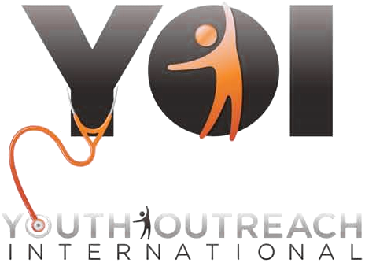

501(c)(3) since 1985 · Lancaster, Pennsylvania
Youth Outreach International
YOI has been a 501(c)(3) since 1985. It was started by Dr. Richard Niemeyer, who, along with his wife Jean, had previously spent 15 years traveling to mission fields all over the world wherever there were emergency situations requiring a doctor. With the formation of the charity, they were able to expand their effectiveness in reaching people with medical care, medicines, clinics, food and supplies in order to support the work of others who were already on site, spreading the gospel of Jesus Christ. Today Youth Outreach continues to work with 3 ministries: two are in Kenya and one is in Haiti.

Ministries
Grace Life Bible College · Kenya
Institution Puits Jacob/Pistos · Haiti
The Maisha Project · Kenya
Our purpose
Although not traveling any more, Youth Outreach continues to work with 3 ministries which they have known for years. Rich and Jean visited each ministry multiple times in their own countries and hosted the leaders in their home in Lancaster. Each ministry is led effectively by national Christians and their national staff who know the language, customs, and culture of their own people and they can operate economically to meet the local physical and spiritual needs. The capability, passion, and vision of these leaders is impressive.
Our desire
YOI does not want to run or control any ministries, but rather to maintain a strong relationship with each one. Frequent contact is made with each leader on a regular basis by phone, text and email and pictures to barnstorm ideas for building and improving their ministries. This provides the confidence to support each ministry’s work with donations, shipments, and prayer. In addition, YOI helps them when they come to the States by providing transportation, housing, and by finding speaking engagements where they can raise support.
Ministries
Here is a brief introduction to each ministry, but please read the expanded versions as well for a greater appreciation of each one.

Our Vision Statement
Youth Outreach International is a non-denominational evangelical ministry that exists to facilitate worldwide evangelistic opportunities for both the underprivileged and the influential. By meeting medical, educational, social and spiritual needs, we yield improved health and changed lives through Christ.
Our Mission Statement
Youth Outreach International shares the love of Jesus in countries where we have relationships and influence, by supplying the best possible medical care, diagnostic equipment and pharmaceuticals. We will gather funds, coordinate transportation, and be instrumental in providing quality health education and disease prevention to all people we encounter.
“People don’t care how much you know until they know how much you care.”
(author unknown)
Give
You can make a difference today.
Give online through PayPal or by check.
About 96% of donations go directly to the ministries. The only expenses are tax preparation and the once-a-year donor letter.
Give online
Donate securely through PayPal using a card or your PayPal balance. No account needed.
Mail a check
Make checks or money orders payable to Youth Outreach International and send them to:
Youth Outreach International43 Breeze Way
Lancaster, PA 17602